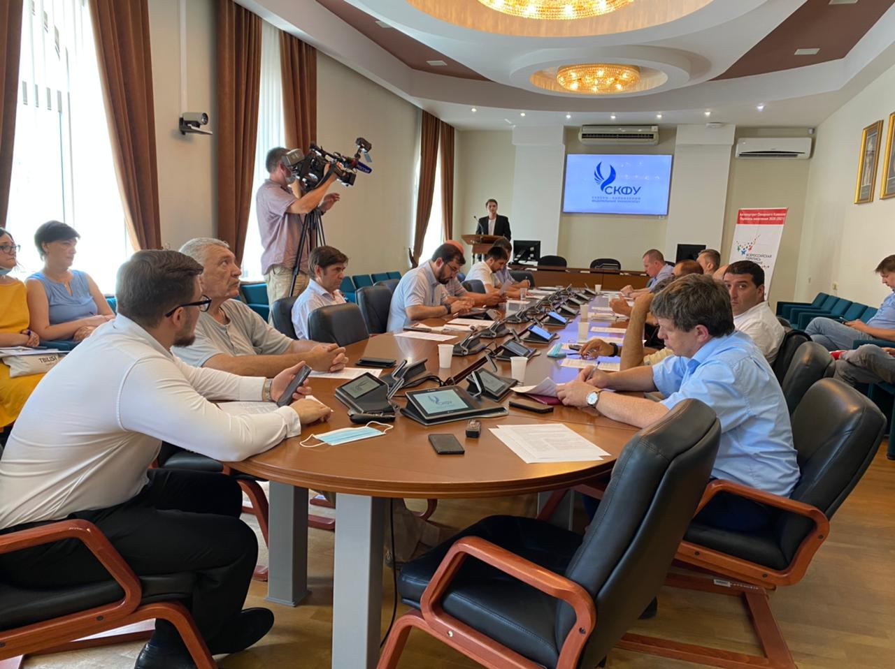
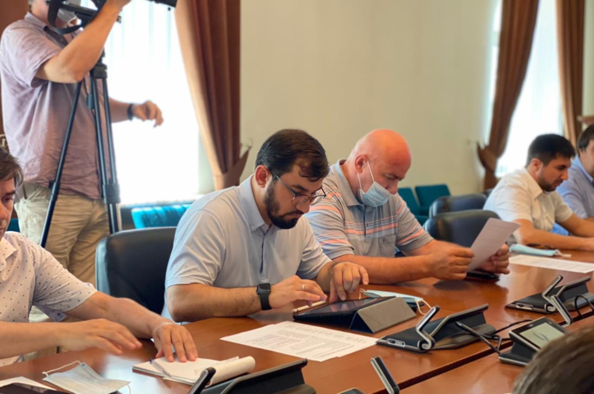
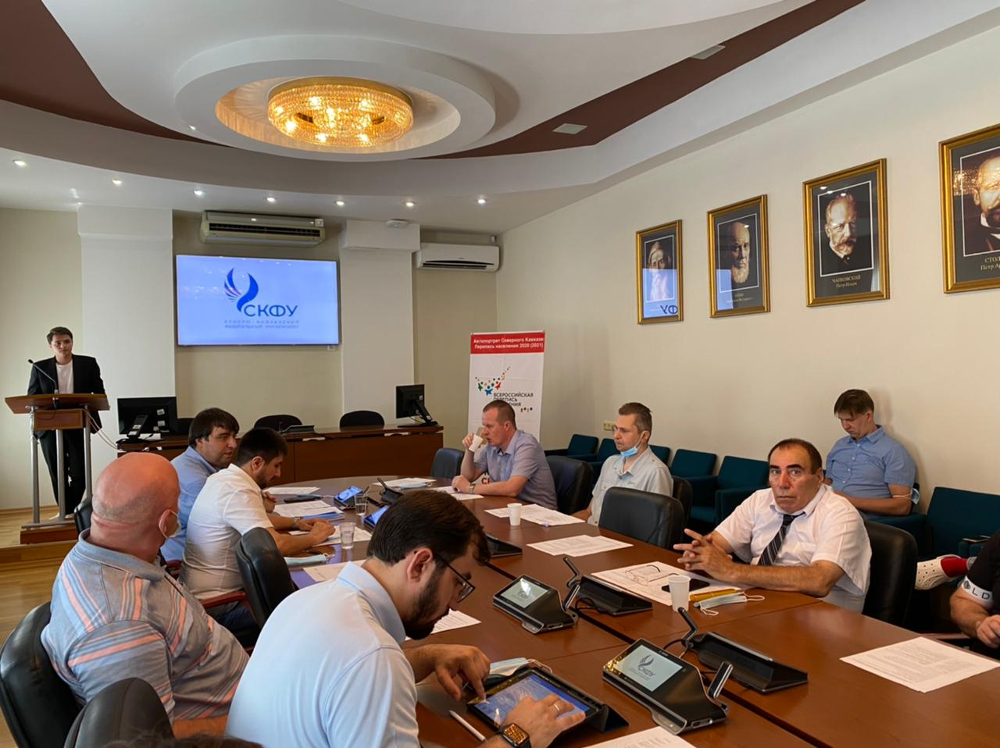

В СКФУ состоялось открытие штаба переписи населения
Вопрос учёта национального состава вызывает повышенный интерес как со стороны жителей СКФО, так и со стороны экспертного сообщества, общественных организаций
В стенах Северо-Кавказского федерального университета прошло открытие штаба общественного проекта «Автопортрет Северного Кавказа: перепись населения 2020 (2021)».
«Автопортрет Северного Кавказа: перепись населения 2020 (2021)» — это общественный проект, который содействует решению проблемы полноты учета народов и этнических групп, соблюдению их права на национальную самоидентификацию при проведении переписи населения в субъектах СКФО.
— Наш университет не первый раз становится площадкой для обсуждения важных тем, и данный проект не стал исключением. Преподаватели вуза выступают экспертами в ряде вопросов, а студенты активно участвуют в подготовке и проведении предстоящих мероприятий. Впереди большой объем работы, но мы уверены, что все получится, — сказал в приветственном слове директор по инновациям и внешним связям СКФУ Сааду Казиев.
Экспертное мероприятие объединило на площадке СКФУ политологов, представителей национальностей региона, специалистов профильных ведомств, в числе которых — заместитель руководителя Управления Федеральной службы государственной статистики по Северо-Кавказскому федеральному округу Владислав Дзекунскас, заместитель председателя Комитета Ставропольского края по делам национальностей и казачества Алексей Чаплыгин и координатор проекта «Автопортрет Северного Кавказа» Александр Джадов.
В ходе мероприятия участники обсудили особенности проведения Всероссийской переписи населения, новые технические и методические подходы к проведению переписей в РФ, полноту и точность учёта национального состава Северного Кавказа в ходе ВПН-2021 и региональную специфику Ставропольского края в переписи населения.
— Одной из фундаментальных проблем всех переписей является проблема полноты учета мнения населения. На фоне реформ, проводимых сегодня в общественно-политической сфере страны, остро ощущается нехватка обновленной социально-демографической информации. Поэтому перепись текущего года представляет собой не только государственное мероприятие по учету населения, но и важнейший социальный заказ, — рассказал старший научный сотрудник НИИ разработки глобальных проблем межконфессиональных отношений, этнополитики и этнокультуры Пятигорского государственного университета Мурад Ибрагимов. — В рамках данного проекта планируется проведение исследований по выявлению потенциально проблемных «точек» на основе данных предыдущих переписей. Будут исследованы показатели проживания и взаимодействия различных этнических групп и разработана соответствующая карта.
Особое значение перепись имеет для регионов Северо-Кавказского федерального округа, где вопрос учёта национального состава традиционно вызывает повышенный интерес как со стороны жителей региона, так и со стороны экспертного сообщества и общественных организаций.
Организатором мероприятия выступили Управление Федеральной службы государственной статистики по Северо-Кавказскому федеральному округу, Комитет Ставропольского края по делам национальностей и казачества и Северо-Кавказский федеральный университет.